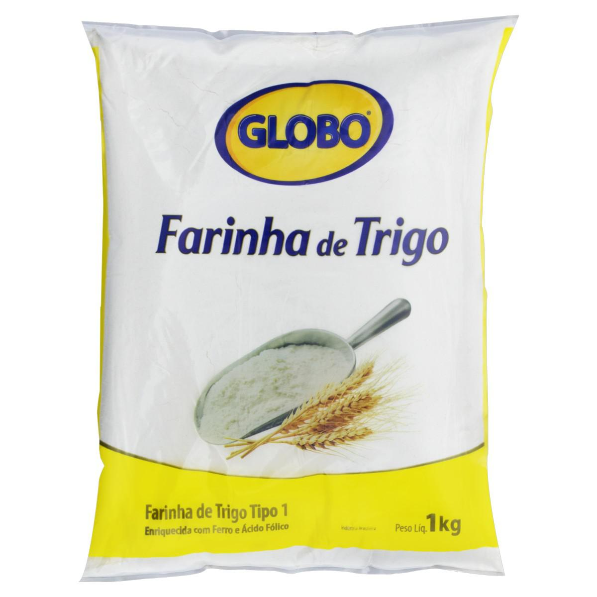
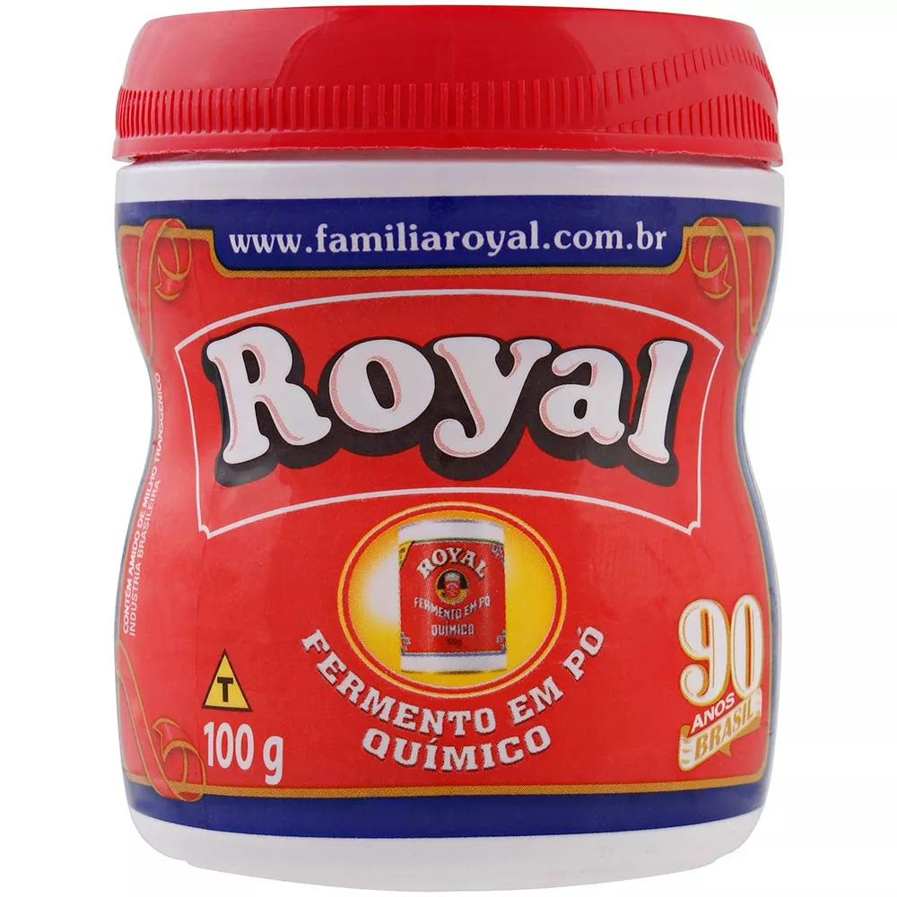
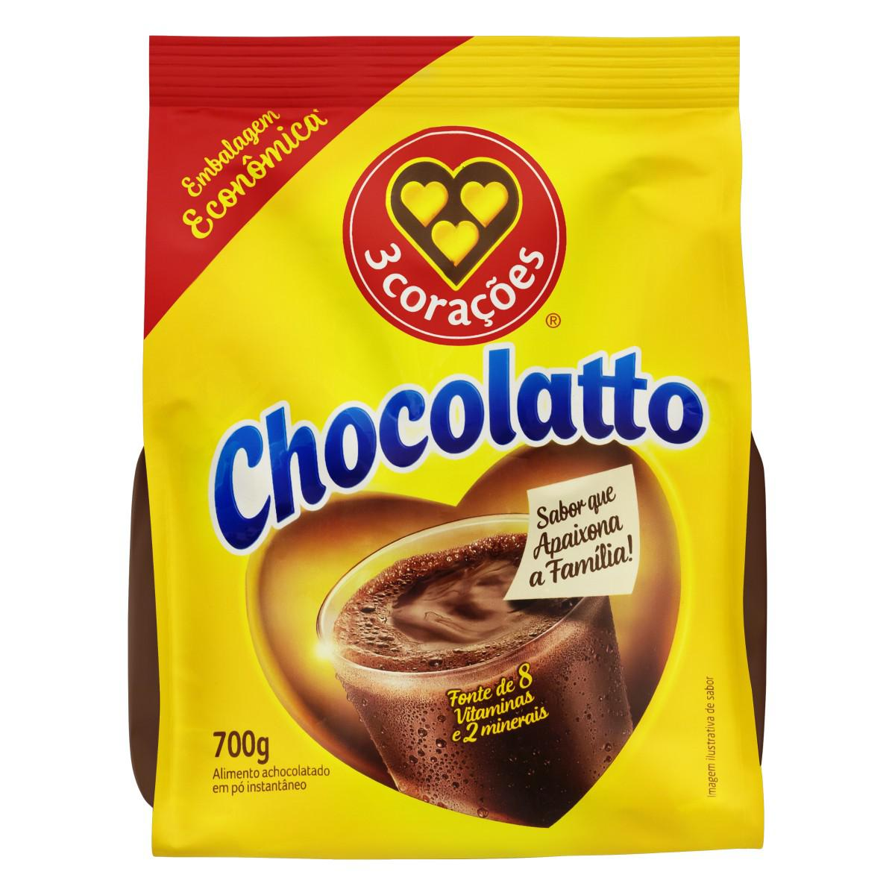
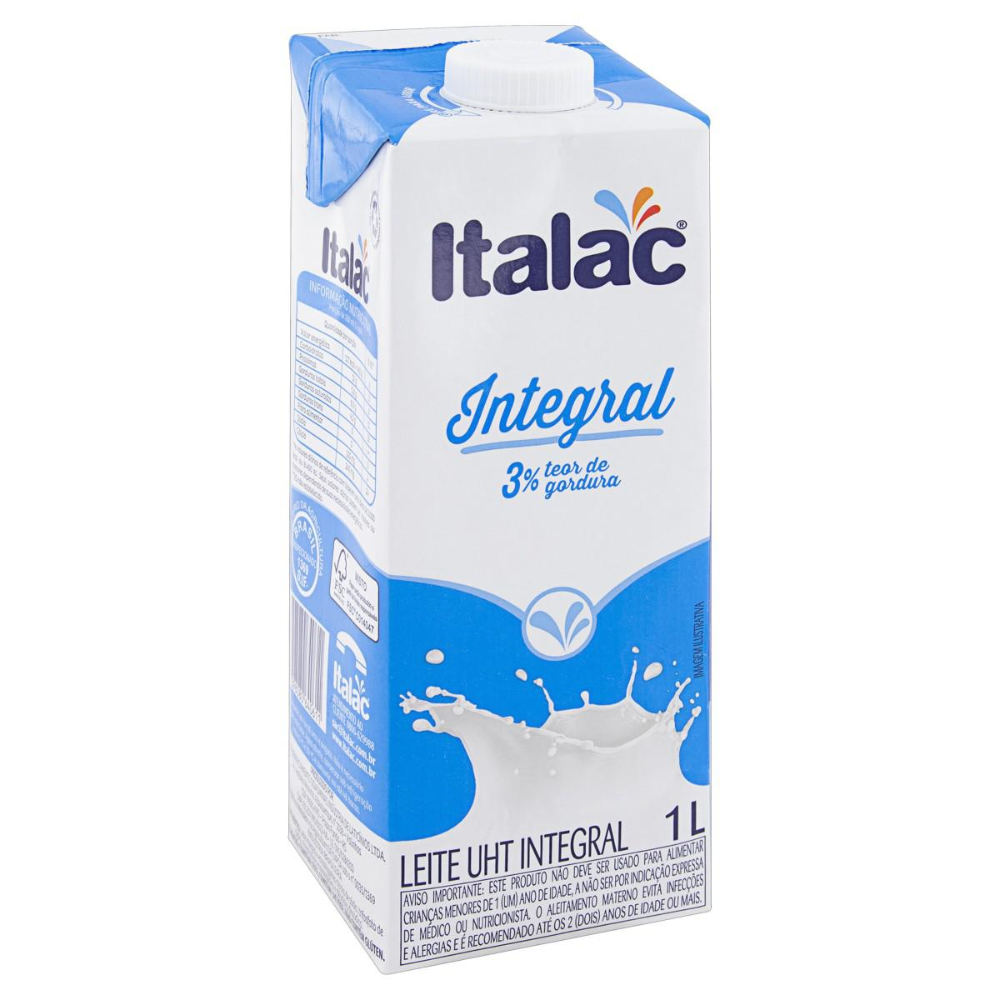

Bolo de Cenoura
O bolo de cenoura é um doce muito popular em nosso país, especialmente no café da manhã e no lanche da tarde. Com sua cobertura de chocolate irresistível e seu interior macio e úmido, é uma receita que conquista o coração de todos!
Ingredientes (8 porções)
Massa:
| 1/2 xícara (chá) de óleo | 3 cenouras médias raladas | ||
| 4 ovos | 2 xícaras (chá) de açúcar | ||
 |
2 e 1/2 xícaras (chá) de farinha de trigo |  |
1 colher (sopa) de fermento em pó |
Cobertura:
| 1 colher (sopa) de manteiga |  |
3 colheres (sopa) de chocolate em pó | |
| 1 xícara (chá) de açúcar |  |
1 xícara (chá) de leite |
Modo de Preparo
Massa:
- Em um liquidificador, adicione a cenoura, os ovos e o óleo e misture.
- Acrescente o açúcar e bata por 5 minutos.
- Adicione a farinha de trigo e misture novamente.
- Acrescente o fermento e misture lentamente.
- Asse em forno preaquecido a 180°C por aproximadamente 40 minutos.
Cobertura:
- Misture manteiga, chocolate em pó, açúcar e leite.
- Leve ao fogo até obter uma consistência cremosa.
- Despeje sobre o bolo.